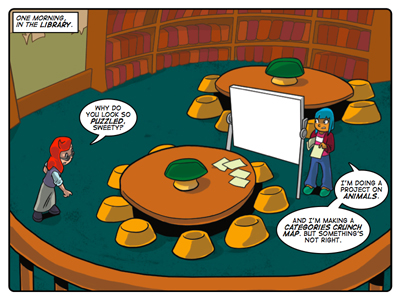

Classifying Things
Synopsis
In this instructional story Farrah tries to categorise animals according to colour. Sophie helps Farrah see that there are better ways to categorise animals. Farrah learns some basic principles for categorising things:
- Use the same principle to create all the categories for the things you want to categorise.
- Use a fundamental principle to create the categories.
- Don’t let the categories overlap as far as possible.
- Name the categories and group them under one heading.